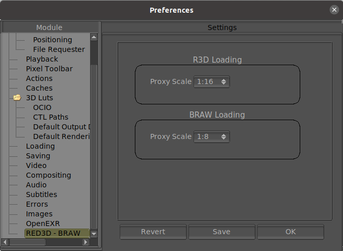

R3D / BRAW Preferences
The R3D / BRAW preferences allows you to toggle the options of the R3D / BRAW format.

R3D Loading
Proxy Scale
This option allows you to select the default proxy scale (miniature scale) for the R3D video.
BRAW Loading
Proxy Scale
This option allows you to select the default proxy scale (miniature scale) for the BRAW video.